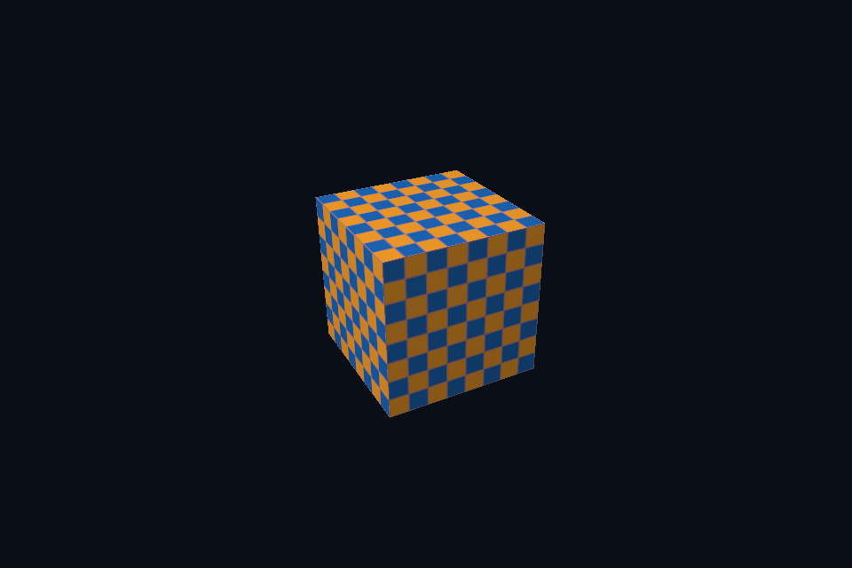

nv04_vma_staging_texture · VMA、Staging 与采样纹理
路线首页 · 原生 Vulkan 对照
构建与运行
cmake --preset vulkan-nvpro
cmake --build --preset vulkan-nvpro-debug --target nv04_vma_staging_texture --parallel 4
.\Vulkan\nvpro\build\bin\Debug\nv04_vma_staging_texture.exe
以上命令从仓库根目录执行，也可使用本页“运行本课”。预期：棋盘纹理立方体，顶点来自 VMA 分配的 device-local buffer。
代码阅读
先读 main.cpp，再读路线根目录 common/nvapp_course.hpp 的 NvLesson/nvproMain。框架实现位于 external/nvpro_core2；其固定 commit 和许可证见路线 README。共享底层实现位于 Vulkan/common/scene_vk.hpp，公共数学/几何位于 shared/scene.hpp。
ResourceAllocator 以 VMA 管理内存，StagingUploader 暂存 CPU 数据并录制复制命令。本课实际创建并上传 VMA vertex buffer，然后将这个 VkBuffer 作为 SceneVk 的绘制输入；纹理/描述符仍沿共享 Vulkan 路径展示。submitAndWaitTempCmdBuffer 完成后才能释放 staging。VMA 解决分配，不替应用消除资源访问与队列同步要求。
动手练习
将索引也改成 VMA buffer；观察 buffer usage 和上传命令；使用 VMA 内存预算信息扩展设置页。
自测：列出本课中由 nvpro_core2 管理的对象，以及仍由 SceneVk/应用管理的对象。参考：Context/Application/RenderTarget/Allocator 负责各自对象，shader、pipeline layout、descriptor 与绘制逻辑仍有显式 Vulkan 状态；框架不会自动推断任意自定义 pass 的全部依赖。
检查
nv04_vma_staging_texture.exe --smoke 使用 GPU 无窗口运行或控制台检查。渲染课读回 Viewport 图像为 PPM；计算课逐项验证。验证层错误会使测试失败。常规窗口的 resize/minimize、UI 输入和长时间运行需要另外检查，不能以 headless 通过代替全部交互验证。
实测画面
固定时间的 GPU 读回图像（nvpro 为 headless Viewport 输出）。

深入学习：数据、接口与执行
第 4 课映射公共场景 mode 6。VMA/StagingUploader 负责 device-local 顶点上传，SceneVk 管理棋盘纹理上传。把两条路径分别画出来才能看清框架边界。
配套精讲：三 API 对照 · 顶点、索引与内存。先读概念与参数选择，再返回本课实现核对，不必一次展开所有公共类。
本课的真实源码切片
来自 Vulkan/nvpro/common/nvapp_course.hpp，第 88—107 行；这是现有实现的局部摘录，末尾可能处于函数中间，不是可单独编译的完整程序。
if (mode == 6) {
auto& vertices = scene->mesh.vertices;
vkCheck(allocator.createBuffer(uploadedVertices,
vertices.size() * sizeof(Vertex),
VK_BUFFER_USAGE_2_VERTEX_BUFFER_BIT));
// 先把数据加入 staging，再录制拷贝并等待 GPU；完成后才能释放临时上传器。
nvvk::StagingUploader upload;
upload.init(&allocator);
vkCheck(upload.appendBuffer(uploadedVertices, 0, std::span<const Vertex>(vertices)));
auto cmd = app->createTempCmdBuffer();
upload.cmdUploadAppended(cmd);
app->submitAndWaitTempCmdBuffer(cmd);
upload.deinit();
scene->overrideVertices = uploadedVertices.buffer;
std::cout << "VMA device-local vertex upload complete\n";
}
}
// 视口大小变化时重建 RenderTarget，并把新的 image view 交给 ImGui 显示。
同主题跨 API 导航
以下是同主题参考；场景、功能完成度和版本基线可能不同，具体边界见对照章节。
先预测，再验证
upload 对象何时可 deinit？
参考推导：在其临时数据不再被 GPU copy 使用之后；本例 submitAndWaitTempCmdBuffer 提供完成条件，不应直接删除等待。
在一次实验中只改一个因素，记录预测、实际画面/日志和原因。检查已有 smoke 是否仍通过；图形调试器里再核对本次 draw 的实际输入/输出，不能仅凭进程正常退出下结论。